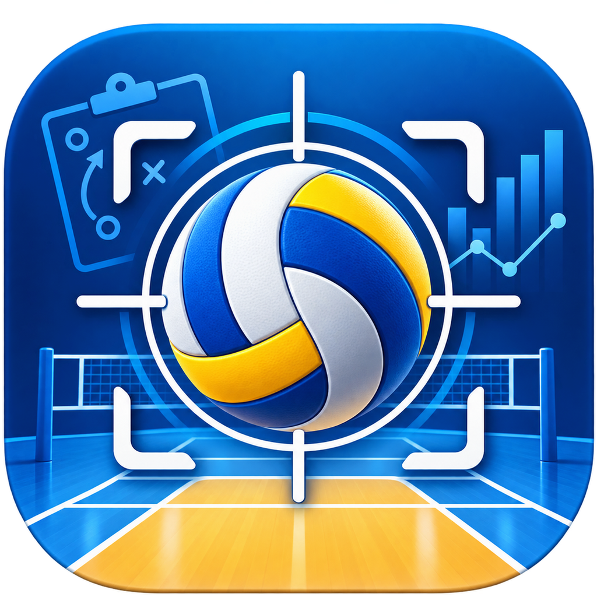

DE
EN

VolleyTakt Live
VolleyTakt Live
Neu bei VolleyTakt? Schnellstart
Als App installieren
Die lokale Zeit startet erst auf ausdrücklichen Befehl. Die verbundene Kamera setzt den Zeitanker erst nach bestätigter Aufnahme.
☰
VolleyTakt Live
0.4.3.3
Spiel einrichten
? Schnellstart
Wir
0
:
0
Gegner
Sätze 0 : 0
Aufschlag: –
lokal bereit
00:00.0
Live-Protokoll
＋
0
✕
Zeit
S
Rot.
P
Spielerin
Aktion
Wert
Stand
Notiz
Korrekturen
+ Punkt Wir
+ Punkt Gegner
Spielstand korr.
Side-out manuell
↶ Undo
↷ Redo
Aktion abbrechen
↻
Bitte Gerät ins Querformat drehen
VolleyTakt Live ist für das Scouting im Querformat optimiert.
Abbrechen
Übernehmen
1 / 1
✕
Einführung
nicht mehr zeigen
Zurück
Weiter